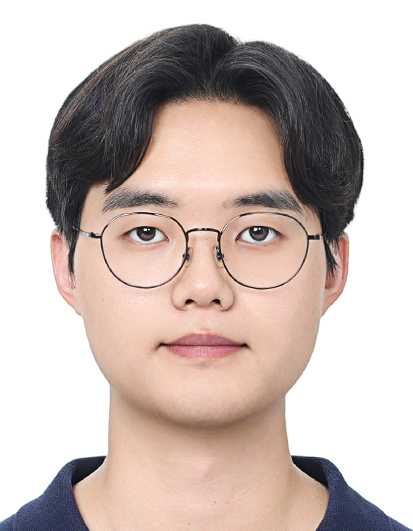
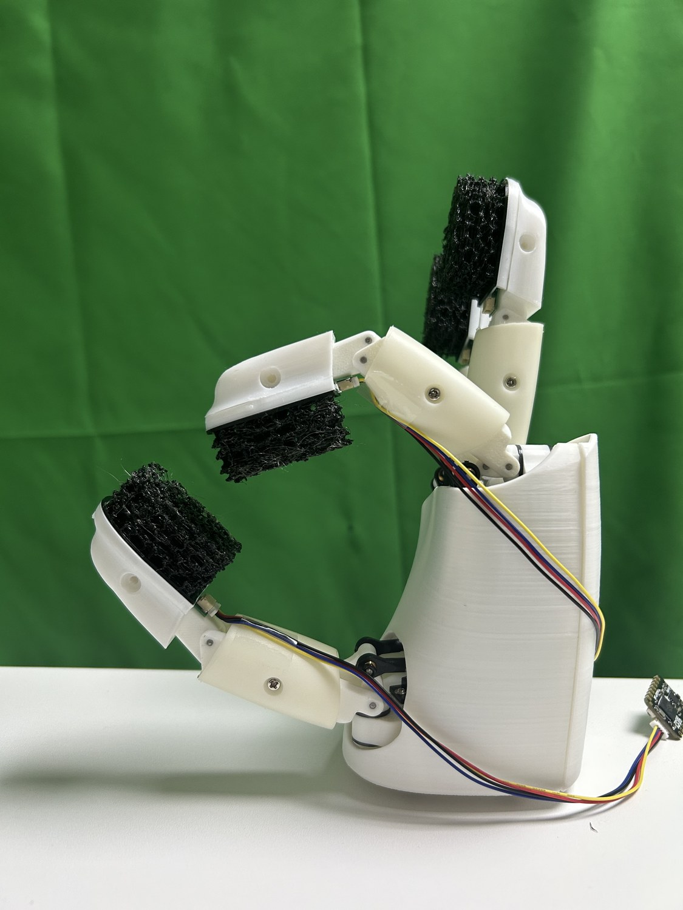
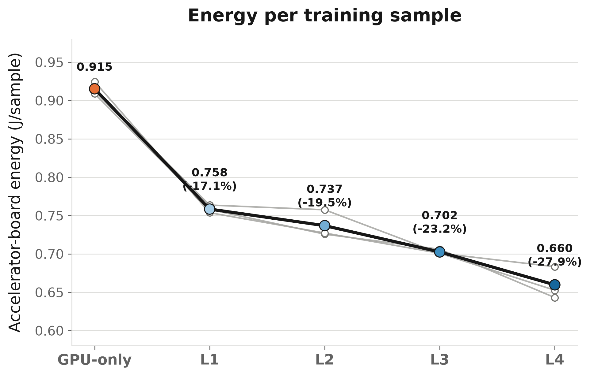
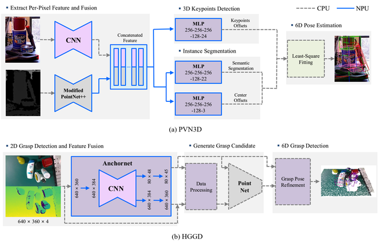

Sungkyunkwan University
M.S. student, Mechanical Engineering
RISE Lab · Advisor: Prof. Hyungpil Moon
GPA: 4.14 / 4.50
Mar. 2025 – Present
I am an M.S. student in Mechanical Engineering at Sungkyunkwan University, working in the RISE Lab with Prof. Hyungpil Moon.
My research focuses on using touch to guide robot manipulation when cameras cannot see the contact area. My master's work, SmolVLA-Touch, combines tactile state estimation with fast action correction. I also work on efficient robot perception and training with neural processing units (NPUs).

M.S. student, Mechanical Engineering
RISE Lab · Advisor: Prof. Hyungpil Moon
GPA: 4.14 / 4.50
Mar. 2025 – Present
B.S., Mechanical Engineering
GPA: 4.27 / 4.50 · summa cum laude
Mar. 2018 – Feb. 2022

Master's thesis research · Sungkyunkwan University · Advisor: Prof. Hyungpil Moon
SmolVLA-Touch uses fingertip magnetic tactile signals and joint history to estimate in-hand object pose and insertion state. These estimates guide the VLM, while a fast tactile path corrects action chunks as contact changes.
Evaluated on a real robot inserting a triangular prism into a socket, with the work area masked in the camera images.
Slides (PDF, English)14 slides

arXiv, 2026
An asynchronous GPU–NPU pipeline that offloads a frozen visual encoder during robot policy training, evaluating energy use, training time, and policy performance.

International Conference on Control, Automation and Systems (ICCAS), 2025
PaperPublication record* Equal contribution
Adapting pose estimation and grasp detection models to a low-power NPU, with an evaluation of accuracy, power consumption, and quantization calibration.
H. Yun, H. Moon
ICRA 2026 Workshop
H. Yun, S. Won, H. Jung, Y. Seo, H. Moon
Korea Robotics Society Annual Conference (KRoC), 2026
S. Won*, H. Yun*, H. Jung, Y. Seo, H. Moon
Korea Robotics Society Annual Conference (KRoC), 2026 · * Equal contribution
I keep study notes and interactive exercises on robotics, control, VLA models, and programming. Most explanations are in Korean.